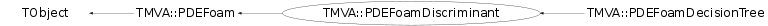

class TMVA::PDEFoamDiscriminant: public TMVA::PDEFoam
PDEFoamDiscriminant This PDEFoam variant stores in every cell the discriminant D = #events with given class / total number of events as well as the statistical error on the discriminant. It therefore acts as a discriminant estimator. It should be booked together with the PDEFoamDiscriminantDensity density estimator, which returns the discriminant density at a given phase space point during the foam build-up.
Function Members (Methods)
public:
protected:
Data Members
public:
| enum TObject::EStatusBits { | kCanDelete | |
| kMustCleanup | ||
| kObjInCanvas | ||
| kIsReferenced | ||
| kHasUUID | ||
| kCannotPick | ||
| kNoContextMenu | ||
| kInvalidObject | ||
| }; | ||
| enum TObject::[unnamed] { | kIsOnHeap | |
| kNotDeleted | ||
| kZombie | ||
| kBitMask | ||
| kSingleKey | ||
| kOverwrite | ||
| kWriteDelete | ||
| }; |
protected:
| Double_t* | TMVA::PDEFoam::fAlpha | [fDim] Internal parameters of the hyperrectangle |
| TMVA::PDEFoamCell** | TMVA::PDEFoam::fCells | [fNCells] Array of ALL cells |
| UInt_t | fClass | signal class |
| TMVA::EDTSeparation | TMVA::PDEFoam::fDTSeparation | BACKWARDS COMPATIBILITY: split cells according to decision tree logic |
| Int_t | TMVA::PDEFoam::fDim | Dimension of the integration/simulation space |
| TMVA::PDEFoamDensityBase* | TMVA::PDEFoam::fDistr | ! distribution of training events |
| Int_t | TMVA::PDEFoam::fEvPerBin | Maximum number of effective (wt=1) events per bin |
| Bool_t | TMVA::PDEFoam::fFillFoamWithOrigWeights | BACKWARDS COMPATIBILITY: fill the foam with boost or orig. weights |
| TMVA::EFoamType | TMVA::PDEFoam::fFoamType | BACKWARDS COMPATIBILITY: type of foam |
| TObjArray* | TMVA::PDEFoam::fHistEdg | Histograms of wt, one for each cell edge |
| Int_t* | TMVA::PDEFoam::fInhiDiv | ! [fDim] Flags for inhibiting cell division |
| Int_t | TMVA::PDEFoam::fLastCe | Index of the last cell |
| TMVA::MsgLogger* | TMVA::PDEFoam::fLogger | ! message logger |
| Int_t* | TMVA::PDEFoam::fMaskDiv | ! [fDim] Dynamic Mask for cell division |
| UInt_t | TMVA::PDEFoam::fMaxDepth | maximum depth of cell tree |
| Int_t | TMVA::PDEFoam::fNBin | No. of bins in the edge histogram for cell MC exploration |
| Int_t | TMVA::PDEFoam::fNCells | Maximum number of cells |
| UInt_t | TMVA::PDEFoam::fNElements | BACKWARDS COMPATIBILITY: number of variables in every cell |
| Int_t | TMVA::PDEFoam::fNSampl | No. of MC events, when dividing (exploring) cell |
| TString | TMVA::PDEFoam::fName | Name of a given instance of the FOAM class |
| UInt_t | TMVA::PDEFoam::fNmin | minimal number of events in cell to split cell |
| Int_t | TMVA::PDEFoam::fNoAct | Number of active cells |
| Bool_t | TMVA::PDEFoam::fPeekMax | BACKWARDS COMPATIBILITY: peek up cell with max. driver integral for split |
| TRandom3* | TMVA::PDEFoam::fPseRan | Pointer to user-defined generator of pseudorandom numbers |
| Double_t* | TMVA::PDEFoam::fRvec | [fDim] random number vector from r.n. generator fDim+1 maximum elements |
| TMVA::Timer* | TMVA::PDEFoam::fTimer | ! timer for graphical output |
| TObjArray* | TMVA::PDEFoam::fVariableNames | collection of all variable names |
| Float_t | TMVA::PDEFoam::fVolFrac | BACKWARDS COMPATIBILITY: volume fraction (with respect to total phase space |
| Double_t* | TMVA::PDEFoam::fXmax | [fDim] maximum for variable transform |
| Double_t* | TMVA::PDEFoam::fXmin | [fDim] minimum for variable transform |
Class Charts
{kind=link}
{kind=link}
{kind=link}
{kind=link}

Function documentation
PDEFoamDiscriminant(const TMVA::PDEFoamDiscriminant& )
Copy Constructor NOT IMPLEMENTED (NEVER USED)
void FillFoamCells(const TMVA::Event* ev, Float_t wt)
TH2D* Project2(Int_t , Int_t , TMVA::ECellValue , TMVA::PDEFoamKernelBase* , UInt_t )
Project foam variable idim1 and variable idim2 to histogram. The projection algorithm is modified such that the z axis range of the returned histogram is [0, 1], as necessary for the interpretation as a discriminator. This is done by weighting the cell values (in case of cell_value = kValue) by the cell volume in all dimensions, excluding 'idim1' and 'idim2'. Parameters: - idim1, idim2 - dimensions to project to - cell_value - the cell value to draw - kernel - a PDEFoam kernel (optional). If NULL is given, the kernel is ignored and the pure cell values are plotted. - nbin - number of bins in x and y direction of result histogram (optional, default is 50). Returns: a 2-dimensional histogram